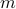
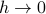
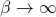

Notes from Section 1 (Friday Week 2)
Today we'll go over the 1D Ising model again to make sure we understand the calculational details.
Periodic boundary conditions
The reason we like to place particles on a ring () rather than on a stick is so that the model now has ‘‘perfect translational symmetry’’ – it looks the same if we slide down all the particles ()
Interpreting Ising model as lattice gas model
We can interpret the two states on each site as
– particle is present at that site
– that site is empty
Now the external field is a sense of ‘‘chemical potential’’ that tells you the amount of energy it costs to create a particle (or to move it from the gas phase to liquid phase)
And now the interaction term describes the interaction energy between particles that are clumped together in the liquid phase.
This is a discrete model rather than a continuous – the particles are only at fixed sites
Writing Hamiltonian as sum over bonds
The 1D Ising model has hamiltonian
which we can rewrite as a sum over bonds
where the function
represents the energy of the bond between sites  and .
and .
The transfer matrix
Notice now that the Hamiltonian is a sum of separate terms! This means that when we write down the term  in the partition function, we get a product of exponentials:
in the partition function, we get a product of exponentials:
Each of the factors in this product depends only on and , so we can call it a transfer matrix with two indices .
We can interpret the components of the transfer matrix as the Boltzmann factor for the energy of that bond, if the two sites of the bond are and :
Some more stuff about summing over indices when we calculate the partition function, so that the partition function ends up looking like …
Calculating the magnetization
As we learned in last stat mech class, once we have the partition function, we can find the free energy as
and then the magnetization as
We can also directly find the magnetization by doing the thermal average….
Taking limits
On our problem set we consider what happens to the 1D Ising model as  …
…
As we take the thermodynamic limit, only the larger eigenvalue of the transfer matrix matters:
And so the free energy is
The homework asks us about the behavior of  as we take various limits.
When we take the  limit FIRST, we can replace with and then try to simplify…the top of the fraction goes to 0 so then
 …
…When we take the limit first,  in the expression, so the second term on the bottom disappears. Then the bottom of the fraction is just the square root of the square of the top, so the answer is
 if the top of the fraction is positive or if it's negative.
if the top of the fraction is positive or if it's negative.
Do these effects come up experimentally? It depends on whether the thermal energy is bigger or if the energy of flipping a spin is bigger… In solid state physics, we tend to see the former…some stuff about whether experimental magnetic fields are uniform or not, and about self-averaging out the field…
The fact that  in one of these limits is peculiar to the 1D Ising model. We'll see that for the 2D Ising model the magnetization will be non-zero at zero temperature….
in one of these limits is peculiar to the 1D Ising model. We'll see that for the 2D Ising model the magnetization will be non-zero at zero temperature….
In 1D, there are no phase transitions from the random-spin phase to the aligned-spin phase.
Why no phase transitions in 1D?
Remember from the first lecture…the lowest-energy excitations in 1D are ‘‘domain walls’’ where all the spins on one side are up and the other side are down. The energy difference is miniscule (just one misaligned pair), but the entropy gain is HUGE (since there's  possible locations for the domain wall), so at any finite temperature, domain wall formation is favorable.
possible locations for the domain wall), so at any finite temperature, domain wall formation is favorable.
This is the reason why the first limit holds (that is, why when we take before ). As the temperature goes to 0 (but remains finite), these domain wall fluctuations mess up any ordering in the spins, so the magnetization remains 0 (disordered).
Analogy with 0-D quantum system (spin-half)
The transfer matrix can be written as a 2x2 matrix, which is finite dimensional. We can think of it as related to the Hamiltonian a 0-dimensional spin-half quantum system…
We need to take the matrix log to write the transfer matrix  as an exponential (where the exponent is related to the Hamiltonian of the corresponding quantum system)
as an exponential (where the exponent is related to the Hamiltonian of the corresponding quantum system)
How do we find this ?
Write and it's nice because
Write the exponential as sum of the sinhs and coshs. One contains all the even powers, other contains odd powers.
The even powers all have whereas the odd powers have . So we can separate into sinhs and coshs….
Anotehr way to see it: Consider the action of the exponentiated matrix on the eigenstates of the matrix. It should get you for one eigenstate (pointing the n hat direction) and then for the other eignestate. Then consider the sum on an arbitrary linear combination of those states…
The algebra of Pauli Matrices
The object is a vector of Pauli matrices…
Anti communtation relations, etc…